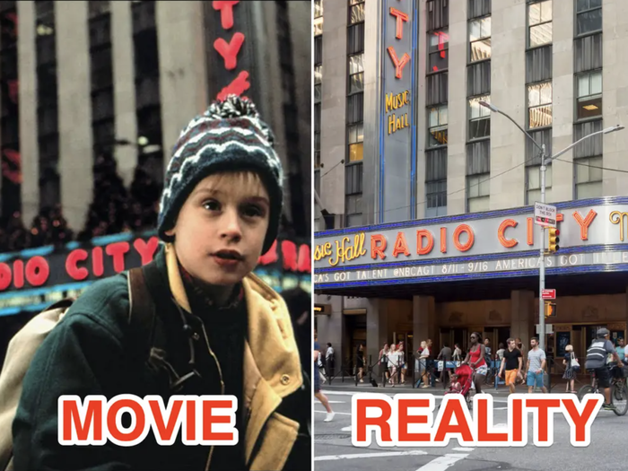
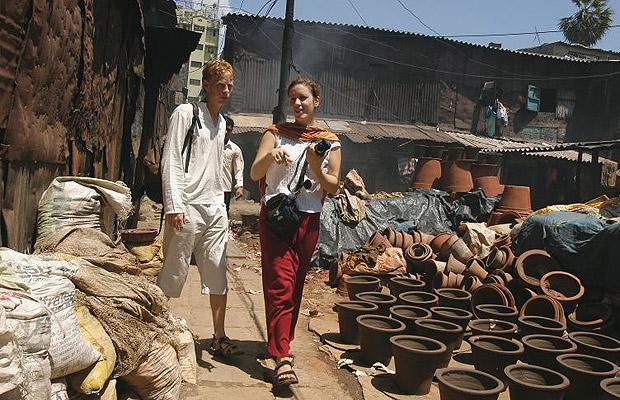

introduction
Celebrity tourism and film tourism are two different divisions of the tourism business that appeal to tourist's fascination with celebrities and renowned film locales, respectively. The tourism industry has grown in popularity as fans seek to meet their favorite celebrities and experience the wonder of memorable movie sequences in real-life settings.
Celebrity Tourism
Celebrity tourism includes tourists visiting regions where celebrities live, work, or have major connections. This sort of tourism allows fans to see their favorite stars, attend concerts, film premieres, and even visit the stars' hometowns.
Film Tourism
Film tourism, often known as movie tourism, involves tourists visiting areas where popular movies and television episodes were filmed. Fans go to these locations to experience the enchantment of the silver screen in person. Film tourism offers fans a unique and immersive experience, from seeing historic places featured in movies to taking guided tours to film sets.
Examples of Film Tourism Destinations

New Zealand (The Lord of the Rings Trilogy):
The breathtaking landscapes of New Zealand served as the inspiration for the well-known "Lord of the Rings" film trilogy. Fans can visit Hobbiton in
Matamata and Tongariro National Park, which served as filming locations.

New York City, United States (Home Alone 2: Lost in New York):
The film features well-known New York landmarks such as the Plaza Hotel, Central Park, and Times Square. Fans of the film frequently
visit these locations in order to recreate memorable scenes and to experience the holiday magic depicted in the film.

India (Slumdog Millionaire):
The Oscar-winning film "Slumdog Millionaire" highlighted Mumbai's vibrant streets, attracting film tourists eager to explore the city's bustling markets and historic sites.
Impact on Tourism Industry
Celebrity tourism and film tourism are segments that contribute to the local economy by driving tourist traffic to lesser-known destinations that become famous due to movies or celebrity connections. Local businesses frequently capitalize on these associations by providing guided tours, merchandise, and experiences related to famous celebrities or film locations.
More InfoChallenges and Ethical Considerations
While celebrity and film tourism can be beneficial to the travel industry, there are some ethical issues to consider. Invading celebrities' privacy or causing disruptions near filming locations can have negative consequences. Furthermore, tour operators and travelers must respect local cultures and use sustainable practices to protect natural and cultural heritage.
More Info